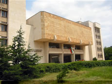

How I Chose to Go to University
Hello, my name is Emil Medarov.I was born on February, 25th, 2001 in Kardzhali, Bulgaria.
I finished my secondary education at the "Hristo Botev" Language High School, Kardzhali(2015-2020).
I'm currently studying at Plovdiv University "Paisii Hilendarski", majoring in Informatics.
I'm currently a fourth year student.I'm from the class of 2020.
Deciding whether to go to university was a big decision in my life.
After high school, I was faced with the choice of continuing my education or exploring other paths.
Here's how I ultimately made the decision to pursue a university degree:
Exploring My Interests
I began by considering my interests and passions.
I made a list of subjects and fields that excited me.
I realized that many of these subjects were taught at the university level.
I knew that pursuing a degree in a field I was passionate about would lead to a more fulfilling educational experience.
Long-Term Goals
I also thought about my long-term goals.
I envisioned the career I wanted to have and the impact I wanted to make in the world.
Many of the roles I aspired to required a higher education.
I recognized that a university degree could provide me with the knowledge and skills necessary to achieve those goals.
Personal Growth and Development
University represented an opportunity for personal growth and development.
I wanted to challenge myself academically and gain a deeper understanding of various subjects.
Additionally, the university environment seemed like a place where I could meet diverse people,
engage in meaningful discussions, and broaden my horizons.
Researching Universities
I spent time researching different universities and their programs.
I looked into their faculty, facilities, and extracurricular activities.
Finding a university that aligned with my interests and values was important to me.
I attended university fairs and open houses to get a feel for the campuses and their communities.
Financial Considerations
While pursuing higher education was appealing, I also considered the financial aspects.
I researched scholarships, grants, and student loans to understand the financial aid options available.
Planning for the costs associated with university education helped me make an informed decision.
Final Decision
After careful consideration of my interests, goals, personal growth, university options, and financial
factors, I decided that pursuing a university education was the right path for me.
I felt excited about the opportunities that lay ahead and was prepared to embark on this new chapter of my life.